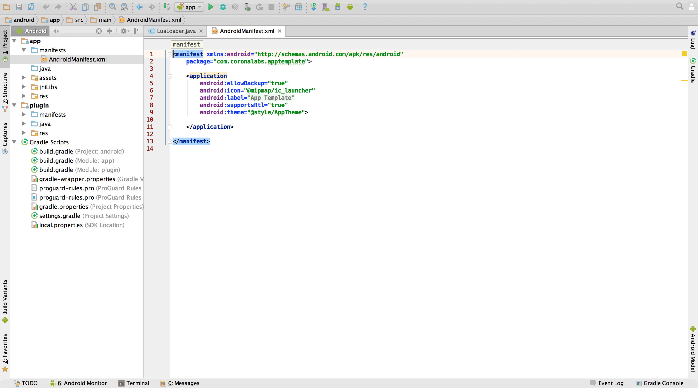

Android Studio Integration
Editing the Manifest
- From the
Projectsidebar in Android Studio, open theAndroidManifest.xmlfile located underapp→manifests

- Normal content of this file should be as follows (this is almost an exact copy of
AndroidManifest.xmlfromandroid_old). The final content is up to you — some of these tags are optional and not required for every app, while other apps will require additional tags.
<manifest xmlns:android="http://schemas.android.com/apk/res/android"
xmlns:tools="http://schemas.android.com/tools"
package="com.coronalabs.apptemplate"
android:installLocation="auto">
<!-- Permissions required by this app. -->
<uses-permission android:name="android.permission.INTERNET"/>
<!-- Informs the app store that this app requires OpenGL ES 2.0 as a minimum. Required by Corona. -->
<uses-feature android:glEsVersion="0x00020000"/>
<!-- Informs the app store what features are required or are optional for this app. -->
<!-- Setting the telephony feature to not required allows this app to be installed by devices that are not phones. -->
<uses-feature android:name="android.hardware.telephony" android:required="false"/>
<!--
Provides information about this app.
The "name" attribute should be set to the name of the class that extends/inherits from the Application class.
The "label" attribute sets the name of the application as how it is shown to the end-user.
-->
<application
android:allowBackup="true"
android:icon="@mipmap/ic_launcher"
android:label="@string/app_name"
android:supportsRtl="true"
android:theme="@style/AppTheme"
android:fullBackupContent="false"
android:hardwareAccelerated="true"
tools:targetApi="honeycomb">
<!-- The main Corona activity that runs the Corona project. -->
<activity android:name="com.ansca.corona.CoronaActivity"
android:screenOrientation="portrait"
android:configChanges="keyboard|keyboardHidden|navigation|screenSize|orientation"
android:label="@string/app_name"
android:launchMode="singleTask"
android:theme="@android:style/Theme.NoTitleBar.Fullscreen">
<intent-filter>
<action android:name="android.intent.action.MAIN" />
<category android:name="android.intent.category.LAUNCHER" />
</intent-filter>
</activity>
<!-- Other Corona activities that can be launched by the main Corona activity. -->
<activity android:name="com.ansca.corona.CameraActivity"
android:theme="@android:style/Theme.NoTitleBar.Fullscreen"
android:configChanges="keyboardHidden|orientation|screenSize"
android:screenOrientation="portrait" />
<activity android:name="com.ansca.corona.VideoActivity"
android:theme="@android:style/Theme.NoTitleBar.Fullscreen"
android:configChanges="keyboardHidden|orientation|screenSize" />
<activity android:name="com.ansca.corona.purchasing.StoreActivity"
android:theme="@android:style/Theme.NoTitleBar.Fullscreen"
android:configChanges="keyboardHidden|screenSize|orientation" />
<!-- Corona content provider required by the video player and mail app to access this app's local files. -->
<provider android:name="com.ansca.corona.storage.FileContentProvider"
android:authorities="com.coronalabs.apptemplate.files"
android:exported="true"
tools:ignore="ExportedContentProvider" />
<!-- Corona service used to perform background operations such as managing notifications. -->
<service android:name="com.ansca.corona.CoronaService" />
<!--
Receiver which automatically starts this application after the Android device starts up.
This is needed to show this application's active status bar notifications and reschedule pending
notifications after the device boots up, because they will only be shown if the app is running.
This receiver only works if the "android.permission.RECEIVE_BOOT_COMPLETED" permission has been set.
-->
<receiver android:name="com.ansca.corona.SystemStartupBroadcastReceiver">
<intent-filter>
<action android:name="android.intent.action.BOOT_COMPLETED" />
</intent-filter>
</receiver>
<!-- Handles local/scheduled notification events. -->
<receiver android:name="com.ansca.corona.notifications.AlarmManagerBroadcastReceiver" />
<receiver android:name="com.ansca.corona.notifications.StatusBarBroadcastReceiver" />
<!-- Listens for Google Cloud Messaging push notifications and registration messages. -->
<receiver android:name="com.ansca.corona.notifications.GoogleCloudMessagingBroadcastReceiver"
android:permission="com.google.android.c2dm.permission.SEND" >
<intent-filter>
<action android:name="com.google.android.c2dm.intent.RECEIVE" />
<action android:name="com.google.android.c2dm.intent.REGISTRATION" />
<category android:name="com.coronalabs.apptemplate" />
</intent-filter>
</receiver>
</application>
</manifest>
Don’t forget to change the following attributes to match your application. They should contain your app’s package name instead of com.coronalabs.apptemplate.
- The
packagevalue at the top of the file. - The value of
android:authoritiesinside the<provider /> - The value of
android:nameinside the<category /><intent-filter />GoogleCloudMessagingBroadcastReceiver.
- If/when you copy the entire Android Studio project to make a new app or a plugin, change the application name inside
app→res→values→strings.xml

Conclusion
Assuming you’ve completed every step, migration is complete. However, remember that you still need to manually prepare store submission of the plugin, for example prepare dependency .jar files (some can be copied from build/intermediates/exploded-aar) and prepare any additional resources files.
When you are sure everything works, you can delete the
android_olddirectory.At this point, you can build the project in
DebugorReleasemode. SelectBuild→Build APK.apkin Finder. You can install this on a device via the usual methods (guide). If you want to change fromDebugmode toReleasemode, openBuild→Select Build Variant…releasefor bothappandplugin.Alternatively, you can connect a device and press the Run button in Android Studio. This will automatically build the project, copy the
.apk, and install/run it on your device.